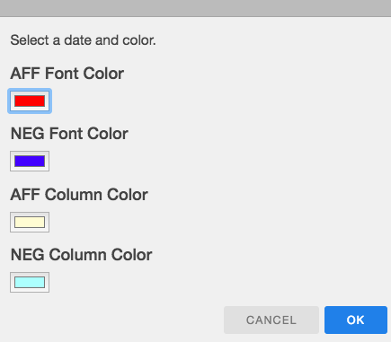

Features
What is Flexcel?
Flexcel is an app for flowing high school LD and PF Debate rounds.
It consists of a flow along with a speech-doc(s).
Note: Flexcel does not require an active interet connection for the desktop application to be used. For the web application, WiFi is needed to launch the application, which can be done before the round starts. After launching, Flexcel WebApp can be operated offline.
Why Flexcel?
Flexcel's autocomplete features allows you to flow faster than ever. It also allows you to add your own customized autocomplete shortcuts. Moreover, Flexcel has a variety of keybindings that makes flowing much more efficient.
Where is Flexcel?
Flexcel is a cross-platform desktop application. It's available for both macOS and Windows on their respective App Stores.
Flow Customization
Flexcel has options to change font colors and column differentiation
Font Color and Column Color
Ctrl + F A dialog pops up and allows you to choose the font color for AFF and NEG color. You can also choose to customize the column color for AFF and NEG to differentiate them.
Bold Font
Ctrl + B Bold the current cell. Checkout the
preview to see how it works.
Note: After you bold the cell, it is recommened to navigate to the next cell using arrow keys.
Navigation
Flexcel has hotkeys which allows for fast navigation.
Tab Navigation
Ctrl + O Previous tab
Ctrl + P Next tab
Note: In order for to switch tabs through keyboard, the cell must be in edit mode.
Spreadsheet
Cell Navigation
Use the arrow keys to navigate the cells.
Row Addition
Ctrl + M Adds a row in the Spreadsheet.
Plan Flow and Policy Flow
Flexcel allows you to customize your Plan Flow and Policy Flow by allowing the user to add an Advantage or an Off.
Tab Addition
Ctrl + K Add AC/ADV tab.
Ctrl + J Add NC/OFF tab.
Tab Deletion
Ctrl + I Delete tab.
Tab Renaming
Ctrl + R Allows user to rename the current tab.
Double Click on any tab to rename it.
Tab Reordering
Drag the tab and you can place it anywhere.
PF Flow Customization
Flexcel allows you to change speakers based on speaker and side.
Switching Speakers
Ctrl + L Switch Speakers.
The default setting is Pro as first speaker. When you use Ctrl + L, the formatting of the flow changes for Con
as first speakers.
Autocomplete
Flexcel has a autocomplete feature which allows for efficient flowing. Checkout the preview to see how it works.
Usage
Flexcel has default autocomplete 'keys' and 'values'. Once you type the 'key' and press enter, the
'value' will be automatically completed for you.
For example, if I type 'vm' into a cell and press enter, the cell would then display 'value: morality'.
Default Autocomplete Keys and Values
- c1: Contention 1
- c2: Contention 2
- c3: Contention 3
- c4: Contention 4
- c5: Contention 5
- c6: Contention 6
- c7: Contention 7
- c8: Contention 8
- c9: Contention 9
- c10: Contention 10
- o1: Off 1
- o2: Off 2
- o3: Off 3
- o4: Off 4
- o5: Off 5
- o6: Off 6
- o7: Off 7
- o8: Off 8
- o9: Off 9
- o10: Off 10
- obs: Observations
- Adv1: Advantage 1
- Adv2: Advantage 2
- Adv3: Advantage 3
- Adv4: Advantage 4
- Adv5: Advantage 5
- Adv6: Advantage 6
- fw: Framework
- def: Definitions
- im: Impact
- vm: value: morality
- stsv: standard is mitigating structural violence
- stmsw: standard is maximizing societal welfare
- stmew: standard is maximizing expected wellbeing
- stut: maximizing utility
- stcomm: standard is consistency with communal obligations
- strl: standard is respecting liberty
- goo: Goodin 95
- k83: Korsgaard 83
- k93: Korsgaard 93
- b02: Bostrom 02
- b11: Bostrom 11
- win: Winter and Leighton 99
- int: Interp -
- vio: Violation -
- sta: Standards
- vot: Voters
- ecd: Econ Da
- cpk: Cap K
- ak: Afropess K
Customization
You can add your own custom 'key' and 'value' autocomplete shortcuts.
Ctrl + T : A dialog pops up in which you enter the key and value.
Note: Customized autocomplete shortcuts are saved across flows. You only have to create it once.
Also, your 'key' can only be one word.
Autocomplete List: Key and Value
Flexcel lets you keep track of your autocomplete keys and values. You can also delete items through the list.
Ctrl + G : A dialog pops up in which you can view and edit the list.
Saving
Flexcel allows you to save pre-flows and flows.
Saving the Flow
Ctrl + S An input dialog pops up in which you insert the name of the flow. Then, an open dialog pops up in which you choose the folder you want to save the flow in.
Loading the Flow
Ctrl + D An open dialog pops up and allows you to choose the file (.json) that you
want to load.
Speech-Doc
Flexcel has a speech-doc viewer/editor right next to the flow. Checkout the preview to see how it works.
Hiding the Speech-Doc
Ctrl + Y Hides the Speech-Doc. You can then use Flexcel and Word in a split-screen.
The same keybinding can be used to get back the speech-doc.
Full Screen Mode
There is a full screen mode under the More option.
Renaming and Reordering Tabs
Same as the tabs in Plan Flow and Policy Flow.